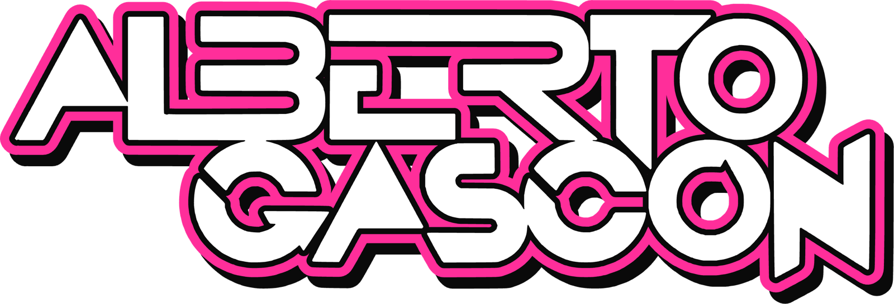
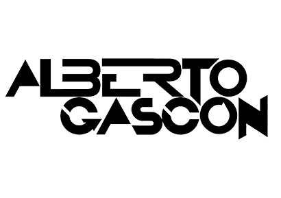
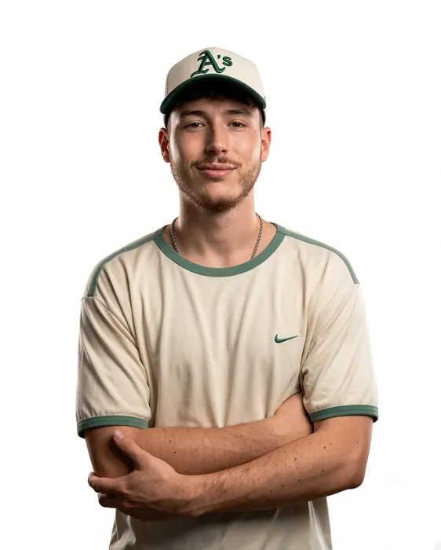
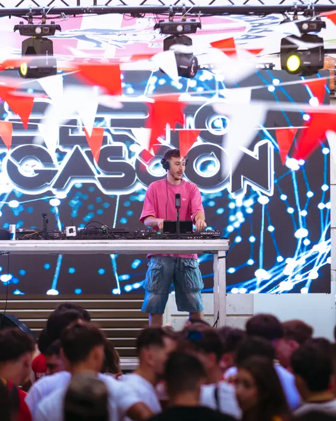
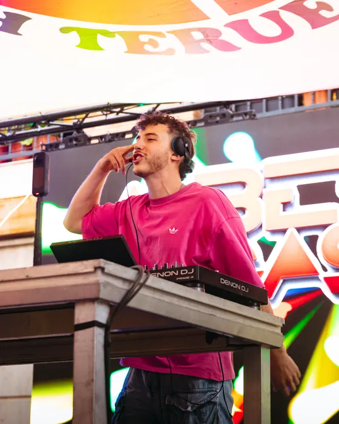
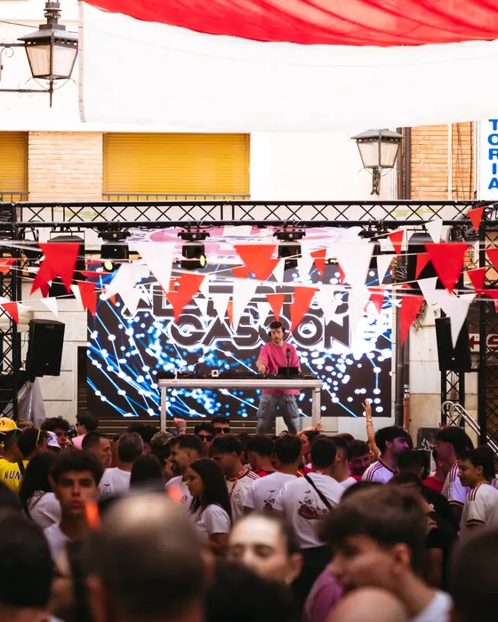
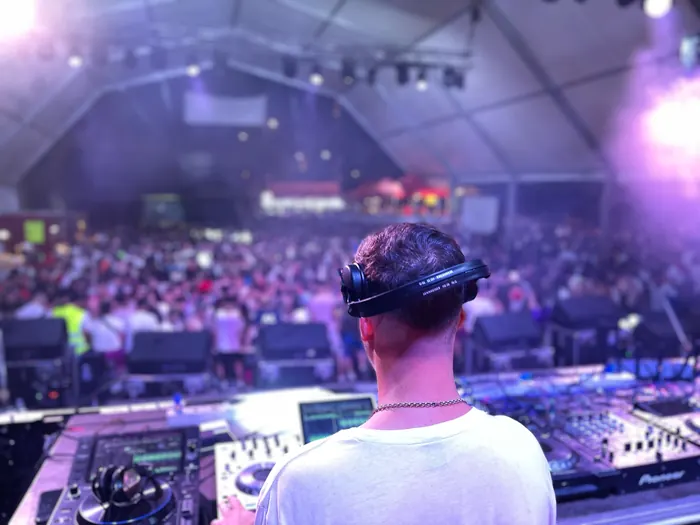

Alberto Gascón (Teruel, 2002) is a DJ based in Valencia, Spain. He has been DJing since he was 13 and professionally for 8 years, with over 400 gigs at clubs, festivals, town fiestas, private events and weddings, including MotoGP Motorland Alcañiz, MotoGP Cheste and La Encerrona. A trained sound technician, he looks after the dance floor and the sound in equal measure.
Fact sheet
In 30 seconds
- Stage name
- Alberto Gascón
- Base
- Valencia, Spain (from Teruel)
- Area
- All over Spain (mainly Teruel, Valencia and Aragón)
- Experience
- DJing since 13 · 8 years as a professional · 400+ gigs
- Age
- 24 (born 2002)
- Formats
- Clubs · Festivals · Town fiestas · Private and corporate events · Weddings
- Equipment
- His own Denon DJ Prime 4, or CDJ-3000 + DJM
- Hospitality
- 4 cans of Coca-Cola in an ice bucket · 4 bottles of water
- Training
- Sound technician (Comenius · Millenia Estudios)
- Bookings
- Salvaje Booking · contacto@salvajebooking.com
- @albertogascon_
- YouTube
- @albertogascondj
Biography
Ready to copy
Alberto Gascón (Teruel, 2002) is a DJ based in Valencia, Spain. He started DJing at 13 and has been a professional for 8 years, with over 400 shows across clubs, festivals, town fiestas, private and corporate events and weddings. He works mainly in Teruel, Valencia and Aragón and travels all over Spain.
He has played MotoGP Motorland Alcañiz and MotoGP Cheste, La Encerrona, Los Que Faltaban and Los Chachos in Teruel, Black (Andorra, Teruel), the Fiestas del Ángel and the town fiestas of the province of Teruel.
As well as a DJ, he is a sound technician: he took the Higher Diploma in Sound for Audiovisual and Live Shows at Comenius and studied Music Production and Sound Engineering at Millenia Estudios in Valencia. He plays on his own Denon DJ Prime 4 or in booths with CDJ-3000s and DJM mixers.
Identity
High-res logos





Photos
Press photos












High-resolution photos for posters, press and social media.
Download all (ZIP · 6 MB) →
For organisers
Technical rider
Option 1
He brings his own gear
- His own Denon DJ Prime 4 controller.
- Needs a sturdy table, a power socket and a connection to the sound system.
Option 2
Organiser's booth
- Pioneer CDJ-3000 players or better.
- DJM-900NXS2, DJM-A9 or DJM-V10 mixer.
Hospitality
In the booth
- 4 cans of Coca-Cola in an ice bucket.
- 4 bottles of water.
Track record
Has played at
MotoGP MotorlandAlcañiz
MotoGP ChesteValencia
La EncerronaTeruel
Los Que FaltabanTeruel
Los ChachosTeruel
BlackAndorra (Teruel)
Fiestas del ÁngelTeruel
Town fiestasProvince of Teruel
Bookings
Want him on your line-up?
His bookings are handled by Salvaje Booking. Email contacto@salvajebooking.com with the date, venue and set time and they'll get back to you with availability and a quote.